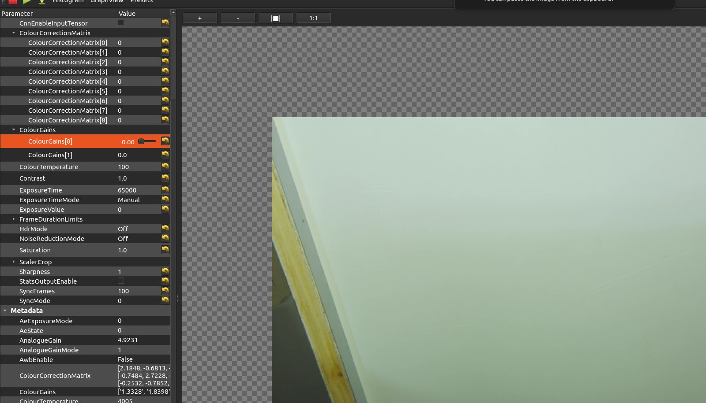
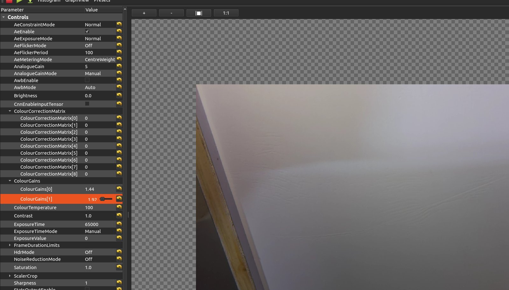
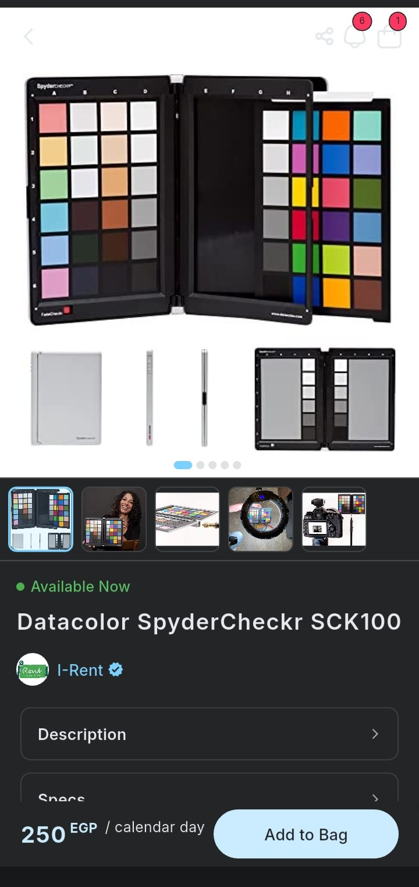
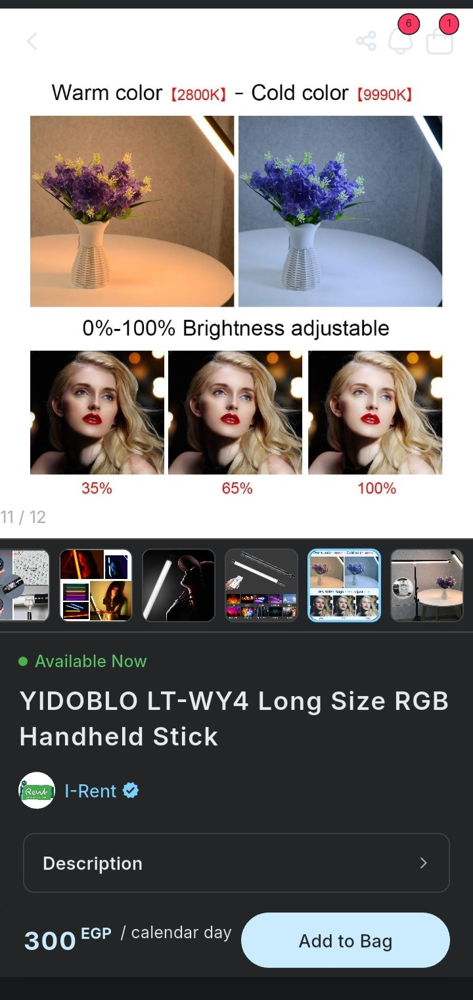
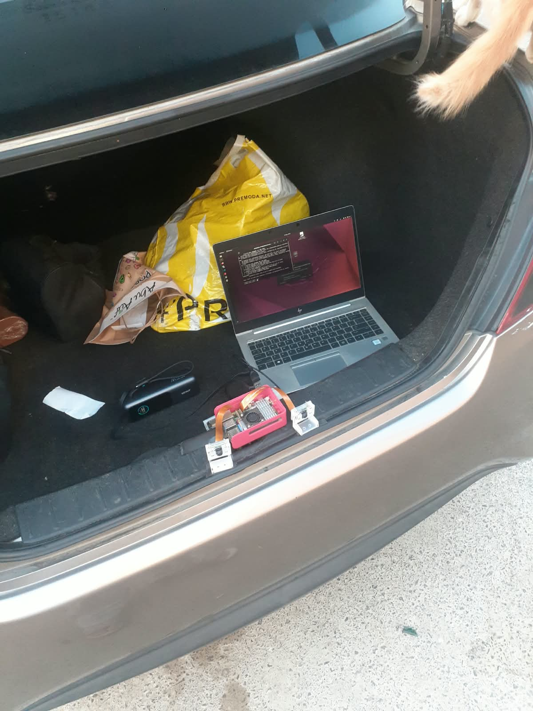
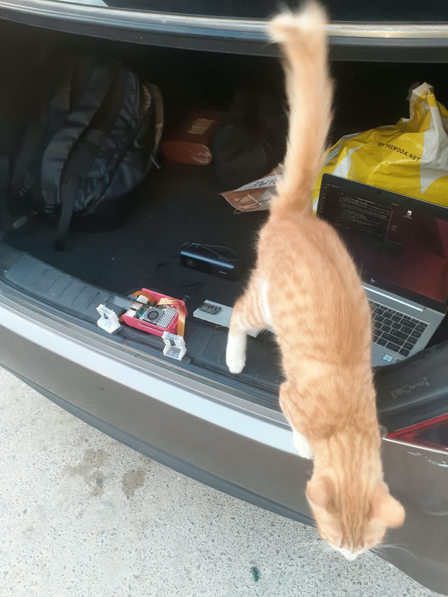
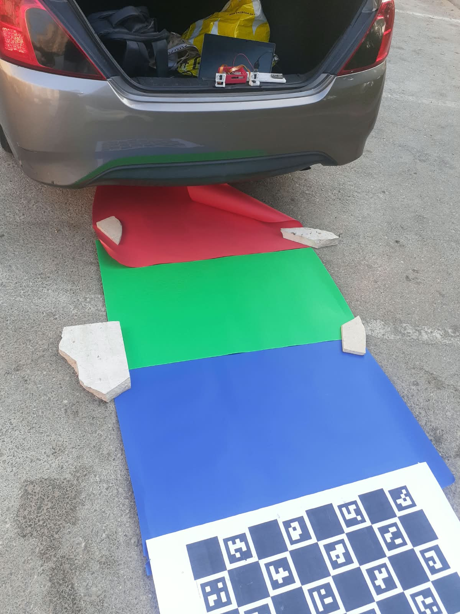
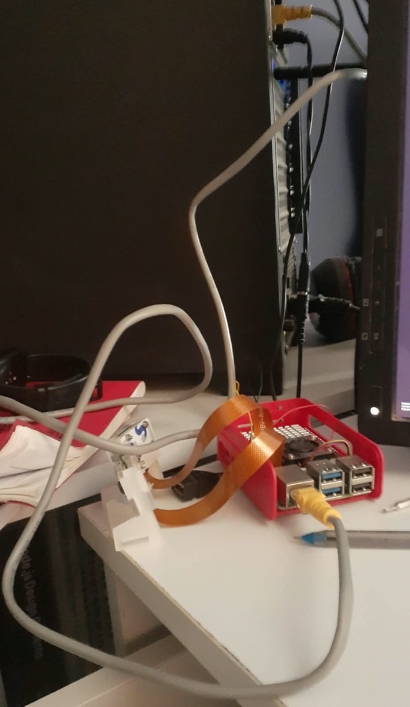

This week
stb_image (vendored as a submodule)
Details
Implemented a static top-down car icon (--car-icon) that draw_car_icon()
composites over the live BEV canvas, scaled to the car's real-world dimensions so it sits at the
correct size relative to the ground plane around it. Loading the icon goes through
stb_image's stbi_load(path, &w, &h, &channels, 4) — normalizes
whatever image format it's given (PNG, JPEG, BMP, TGA, etc.) to 8-bit RGBA in one call, vendored as
a single header (nothings/stb) rather
than pulling in a full system dependency just for this. save_snapshot()'s write side
still uses libpng directly — stb_image is read-only, so it couldn't cover
that half.
Ran the rpicam-apps scripts from last week for real — both cameras, parked outside,
one script per variable tested. Each command below is the actual script's rpicam-vid
call for camera 0, variables substituted in; camera 1 is the same command with
--camera 1 and its own output names. Video from both cameras follows each command.
rpicam‑vid ‑‑camera 0 ‑‑mode 1640:1232 ‑‑width 1640 ‑‑height 1232 ‑‑codec mjpeg ‑t 45000 ‑‑nopreview ‑‑metadata camA_meta.json ‑‑metadata‑format json ‑o camA.mjpegrpicam‑vid ‑‑camera 0 ‑‑mode 1640:1232 ‑‑width 1640 ‑‑height 1232 ‑‑codec mjpeg ‑t 45000 ‑‑nopreview ‑‑shutter 2419 ‑‑gain 1.0 ‑‑awbgains 1.48,1.56 ‑‑denoise off ‑‑metadata camA_meta.json ‑‑metadata‑format json ‑o camA.mjpegrpicam‑vid ‑‑camera 0 ‑‑mode 1640:1232 ‑‑width 1640 ‑‑height 1232 ‑‑codec mjpeg ‑t 45000 ‑‑nopreview ‑‑awb auto ‑‑metering centre ‑‑exposure short ‑‑metadata camA_meta.json ‑‑metadata‑format json ‑o camA.mjpegrpicam‑vid ‑‑camera 0 ‑‑mode 1640:1232 ‑‑width 1640 ‑‑height 1232 ‑‑codec mjpeg ‑t 45000 ‑‑nopreview ‑‑awb auto ‑‑metering centre ‑‑exposure long ‑‑metadata camA_meta.json ‑‑metadata‑format json ‑o camA.mjpegrpicam‑vid ‑‑camera 0 ‑‑mode 1640:1232 ‑‑width 1640 ‑‑height 1232 ‑‑codec mjpeg ‑t 45000 ‑‑nopreview ‑‑awb auto ‑‑metering centre ‑‑metadata camA_meta.json ‑‑metadata‑format json ‑o camA.mjpegrpicam‑vid ‑‑camera 0 ‑‑mode 1640:1232 ‑‑width 1640 ‑‑height 1232 ‑‑codec mjpeg ‑t 45000 ‑‑nopreview ‑‑awb auto ‑‑metering spot ‑‑metadata camA_meta.json ‑‑metadata‑format json ‑o camA.mjpegrpicam‑vid ‑‑camera 0 ‑‑mode 1640:1232 ‑‑width 1640 ‑‑height 1232 ‑‑codec mjpeg ‑t 45000 ‑‑nopreview ‑‑awb auto ‑‑metering average ‑‑metadata camA_meta.json ‑‑metadata‑format json ‑o camA.mjpeg
The field test above showed camA and camB landing on noticeably different colour temperatures
even under identical settings — each camera's own auto white balance guessing independently
instead of agreeing. So I tried fixing it by hand: SSH'd into the Pi, disabled
AwbEnable, and dragged ColourGains[0]/ColourGains[1]
(red/blue gain) live while watching the RGB histogram converge on a neutral reference target.
First attempt used a sheet of A1 paper as the neutral reference — wrong tool for the job, so I
switched to a plain white disk drawer front instead, which held still and gave a more consistent
flat surface to balance against. Gain settled around R=1.44, B=1.92 on
the drawer:


Except it isn't a real fix yet: the light on the drawer was a phone flashlight I was holding, not a fixed source — its angle and distance drifted between shots, so the "neutral" target the gains converged against wasn't actually constant. The histogram looked right, but I can't trust the numbers until the light itself is fixed in place. Redoing this with a stable light source is next.
Went and read the calibration chapter of Raspberry Pi's own
Camera Algorithm and Tuning Guide
afterwards, and it makes the drawer-and-flashlight attempt look exactly as improvised as it was.
The actual tool (ctt.py, shipped with libcamera) doesn't hand-fit two
gain numbers against one light — it wants a real X-rite/Macbeth 24-patch colour chart,
photographed as raw DNGs across several distinct illuminants (each filename encoding its colour
temperature and lux, like 2954K_1749L.dng), plus a handful of flat, featureless shots
per illuminant for lens shading. Feed a folder of those into ctt.py and it fits the
whole tuning file at once — the AWB colour-temperature curve, the colour correction matrices, the
lens shading tables — from real measured data instead of one eyeballed histogram. That's the
version of this worth actually doing: get a Macbeth chart, shoot it under a few real illuminants,
and run the tool instead of dragging sliders.
So that's the plan: booked a studio room and lined up rentals for the two pieces of equipment the guide actually asks for — a Datacolor SpyderCheckr, which plays the same role as the X-rite Macbeth chart (24 colour patches plus a grey/white panel on the back for the lens-shading shots), and an RGB light wand with adjustable colour temperature (2800K–9990K) to act as a controlled, repeatable illuminant instead of a handheld phone flashlight:


Also separately looked into what to actually mount the checkerboard on this time — foam PVC board and acrylic as candidates, since the paper-on-wood/cardboard from week 10 warped too much to trust — and ordered two vinyl prints of the checkerboard pattern instead of paper, which should hold flat on its own without a rigid backing at all.
Rest of the week's setup, for reference. Everything lives in the trunk during a capture session — Pi, camera pair, laptop, and (finally) the power bank that never arrived a couple of weeks ago:


Also laid out some improvised colour sheets (not a real Macbeth chart, just flat red/green/blue mats) and the ChArUco board on the ground behind the car — more useful as a reminder of what a proper calibration shoot needs than as an actual substitute for one:

Separately: Camshark (the remote camera viewer from this week's colour work) was
running over the Pi's WiFi connection, and it took the entire home network down with it —
couldn't even get another device online while it was connected. Switching the Pi to a wired
Ethernet connection instead fixed it outright (that's what the cam1-eth filenames
from earlier were — camera 1 was captured after the switch). Best guess is the raw preview stream
was saturating the WiFi link badly enough to choke the router for everyone else on it; haven't
confirmed that's the actual cause, just that Ethernet made the problem disappear.
